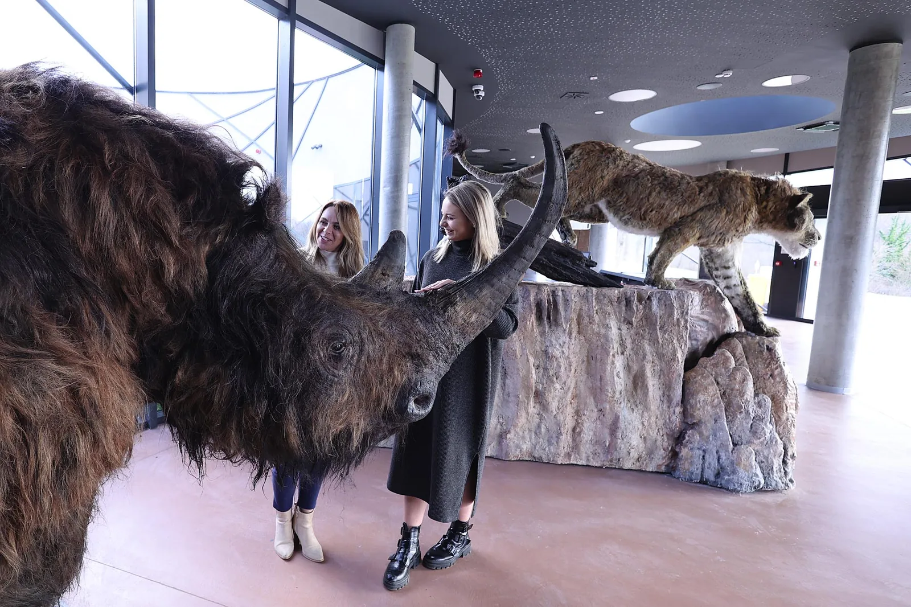

SPELEON - centar podzemne baštine
U ponedjeljak, 23. siječnja svečano se otvara Speleon – centar podzemne baštine. Centar je smješten u Novoj Kršlji na mjestu nekadašnjeg Prvog speleološkog doma Republike Hrvatske, početne točke brojnih ekspedicijskih…

Originalni tekst: Ksenija Begović, portal karlovacki.hr
Fotografije: Dinko Neskusil
U ponedjeljak, 23. siječnja u Novoj Kršlji svečano se otvara Speleon – centar podzemne baštine, projekt vezan uz Baraćeve špilje, a već sljedeći dan, od 24. siječnja je otvoren za posjetitelje. Centar je smješten u Novoj Kršlji na mjestu nekadašnjeg Prvog speleološkog doma Republike Hrvatske, početne točke brojnih ekspedicijskih istraživanja ovog područja.
Projekt je sufinanciran europskim novcem, osmišljen u Javnoj ustanovi Baraćeve špilje - za upravljanje zaštićenim prirodnim vrijednostima općine Rakovica u partnerstvu s Nacionalnim parkom Plitvička jezera.
Projekt Speleona krenuo je od Gornje Baraćeve špilje koja je posljednjih godina postala turistički adut Rakovice i iz godine u godinu privlači sve veći broj posjetitelja. Međutim, zbog populacije šišmiša koji u špilji obitavaju, u zimsko vrijeme kad spavaju zimski san, zatvorena je za posjetitelje. Sad će špilju uz pomoć digitalne 3D tehnologije posjetitelji Speleona moći vidjeti i zimi.
Gornja Baraćave špilja puno je više od špilje pristupačne za posjetitelje, lokalitet je to u kojem se godina provode brojna znanstvena istraživanja u kojoj su pronađeni brojni nalazi koji svjedoče o bogatoj i burnoj povijesti ovog kraja – od prapovijesti do srednjeg vijeka. Ti nalazi i priča o istraživanjima Baraćevih špilja sad su zaokružena priča.
Priča počinje geologijom, reljefnim prikazom cijelog zaštićenog krajobraza za što je zaslužan dugogodišnji suradnik i istraživač Baraćevih špilja, profesor na zagrebačkom PMF-u Neven Bočić. U geološku se priču uklapa i 3D snimka Gornje Baraćeve špilje.
Svoje mjesto u postavu imaju i brojni paleontološki nalazi. Paleontolog Kazimir Miculinić počeo je istraživanja 2013. godine i u nekoliko sezona istraživanja pronašao oko 30.000 fragmenata kostiju životinja iz Ledenog doba. Pronađeni dijelovi kostiju špiljskog lava poslužili su da se uz pomoć računala rekonstruira cijeli kostur koji je poslije isprintan 3D tehnologijom. Na temelju tog kostura izrađena je replika lava.
Velike zvijeri odavno ne žive u ovdašnjim špiljama, ali to ne znači da nema života, uz šišmiše, u mračnim dijelovima živi nekoliko endemskih vrsta koje će također naći svoje mjesto u postavu.
Nisu Baraćeve špilje služile kao zaklon samo životinjama - posljednji nalaz nedavno predstavljen javnosti potvrđuje da je barem povremeno u Baraćevim špiljama boravio i neandertalac. Njemu je posvećena jedna prostorija s animacijom, a snimljen je i film koji prikazuje neandertalca u Baraćevoj špilji. Zanimljivo je da je neandertalca u filmu odigrao profesor sa Sveučilišta u Wyomingu, antropolog Rick Weathermon, koji je sa svojim studentima pod vodstvom arheologa Krešimira Raguža sudjelovao u nekoliko istraživanja.
-Njegova je želja bila da bude barem nakratko neandertalac, mi smo tu omogućili, a nakon snimanja filma profesor Weathermon je otišao u mirovinu, ispričala je Tihana Oštrina.
I burna vremena srednjeg vijeka ostavila su trag u Baraćevim špiljama o čemu svjedoči arheološki postav za koji je zaslužan Krešimir Raguž. Osim keramike i oružja, priča je to o utvrđenim špiljama koje su služile za sklanjanje lokalnog stanovništva kod prodora Turaka. Ljudi su u špiljama gradili obrambene zidove, čiji se ostaci vide i u Gornjoj Baraćevoj špilji, ali tu je impozantni 12-metarski obrambeni zid u Jankovićevoj špilji, udaljenoj svega nekoliko kilometara. I ovaj lokalitet u budućnosti bi mogao postati dio ponude, smatra Tihana Oštrina napomenuvši da se nastavljaju i istraživanja vezano uz neandertalca, a za što je zaslužan speleolog Hrvoje Cvitanović.
Bez speleologa, speleoronilaca, arheologa, paleontologa, geologa, ljudi koji desetljećima provode istraživanja, ne bi bilo niti Speleona. Zato je dio Centra podzemne baštine posvećen upravo njima. Izložena je oprema kakvom su speleolozi istraživali nekad i kakvom se služe danas. Naime, ako je Klek kolijevka hrvatskog planinarstva, Baraćeve špilje su kolijevka speleologije, pa će tu svoje mjesto naći speleološke publikacije iz čitave Hrvatske i svijeta.
Iako je cilj Speleona – centra podzemne baštine privući posjetitelje tijekom cijele godine, ovo je ujedno i edukativni, ali i znanstveni centar naglašava Tihana Oštrina. Zato je u Speleonu uređen i depo za pohranjivanje nalaza, posebno uređena prostorija s odgovarajućom ventilacijom, pazi se na temperaturu i vlažnost i namijenjena je znanstvenicima i istraživačima.
-Cilj nam je okupiti znanstvenike da ovdje istražuju, obrađuju i pohranjuju svoje nalaze. A prema riječima znanstvenika s kojima smo do sada surađivali rekli su nam da ovakvog dobro uređenog depoa nema od Zagreba do Splita na što smo jako ponosni.
Uz eksponate u postavu Speleona izuzetno je važna multimedija koja će posebno biti zanimljiva mlađim posjetiteljima. Primjerice, moći se digitalno okušati u paleontologiji ili u speleologiji kroz zanimljivu interaktivnu igricu, osjetiti na vlastitim leđima s koliko kilograma opreme na sebi roni speleoronilac i slično.
Važno je napomenuti da će se postav Speleona i dalje razvijati i nadopunjavati novim sadržajima, odnosno priča ne staje nakon otvorenja.
Razgled Speleona – centra podzemne baštine bit će isključivo uz stručno vođenje napominje Marina Magdić, voditeljica odjela promocije i posjećivanja. Kako nadopunjava ravnateljica, teme nisu svakodnevne, a cilj je da posjetitelji dobiju novi doživljaj i iskustvo, ali i znanja o zaštiti prirode.
-Mi smo se trudili da vođenje svakako prilagodimo posjetiteljima. Dakle da može posjetitelj razumjeti, ali da bude znanstveno utemeljeno, točno i stručno interpretirano i na to posebno pazimo. Iskustva posjetitelja Gornje Baraćeve špilje, gdje imamo jako dobre recenzije upravo na vođenje, bila su nam u tome jako dragocjena, kažu Magdić i Oštrina.
Zbog stručnog vođenja i cijena ulaznica će biti nešto viša. Van sezone ulaznica za Speleon će biti 11 eura, a u sezoni 13,50 eura. Obilaskom i Gornje Baraćeve špilje i Speleona jedna se ulaznica plaća po punoj cijeni, a duga će biti snižena 30 posto.
Tekst je u izvornom obliku objavljen na ovom linku